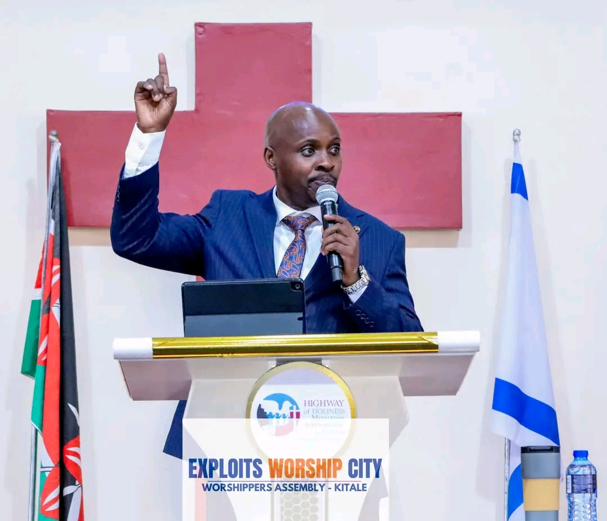

About Us
Exploits Worship City is committed to preaching Jesus Christ, equipping believers, and transforming communities through the Gospel.
Meet Our Senior Pastors

Apostle Charles Byegon
Senior Pastor of Exploits Worship City. Passionate about preaching the Gospel, prayer, discipleship, and raising kingdom ambassadors who transform society through Christ.

Rev. Edna Byegon
Co-Pastor of Exploits Worship City. Dedicated to prayer, family ministry, mentoring, and encouraging believers to grow in faith and serve God faithfully.